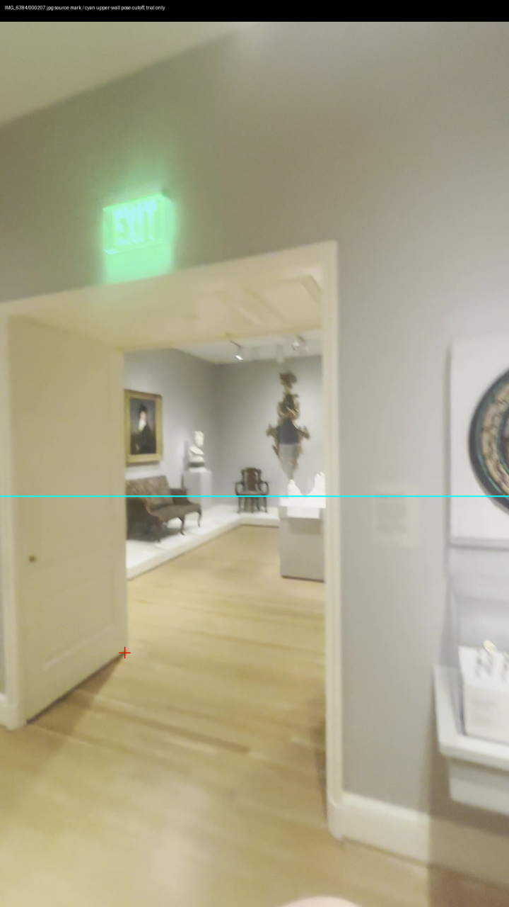
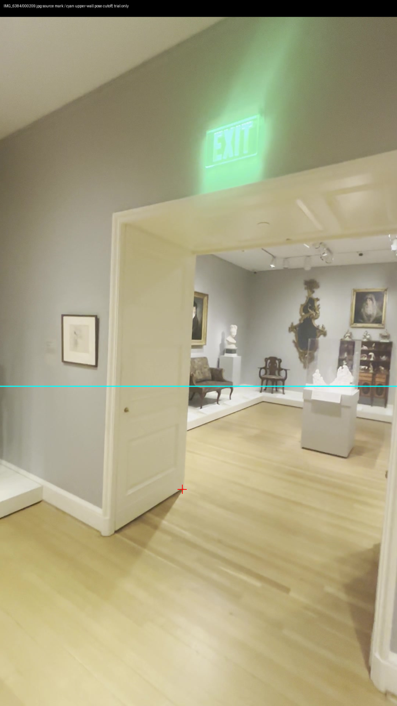
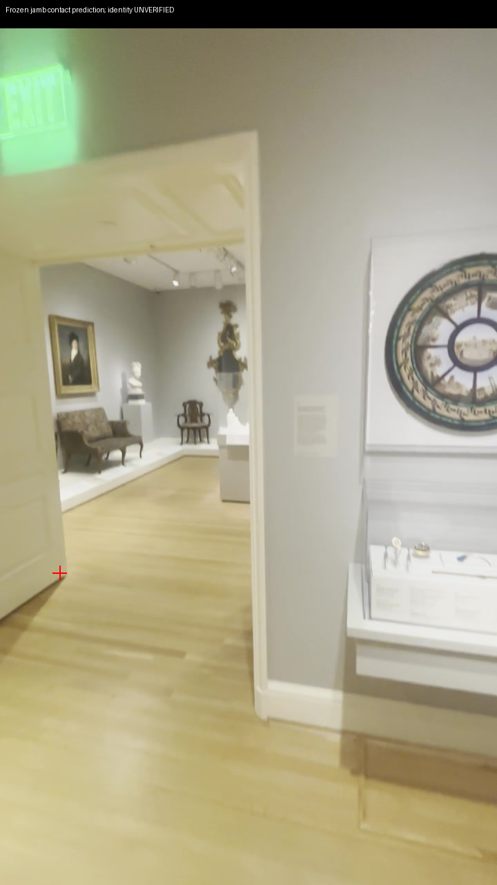

September 30, 2026. Scheduled Collection heartbeat disabled at the owner's request; this session continues as the main worker. Collection prototype only; 3D Viewer unchanged.
Two frozen source marks triangulate one visible left jamb/floor contact. The reserved wall camera has 72 fit inliers and 77 unused points below 4px. Approximate visual contact error: 5.48px, marked by the same worker after seeing the prediction. This is not an independent annotation or capture.
No floor, scale, opening width or collision extension accepted. Viewing angle is only 4.16 degrees; 2px source-mark perturbations give 11.29% camera-distance uncertainty at the 95th percentile. The opposite jamb is clipped in source209.



Next: seek a separated view of this same opening, with both jamb bottoms visible, before attempting an opening width or floor plane. Full rooms, independent scale, sculpture coverage and lighting bake remain unresolved.
Dated checkpoint · Point calculation · Visual estimate and caveat · Sources and hashes · Disabled automation receipt